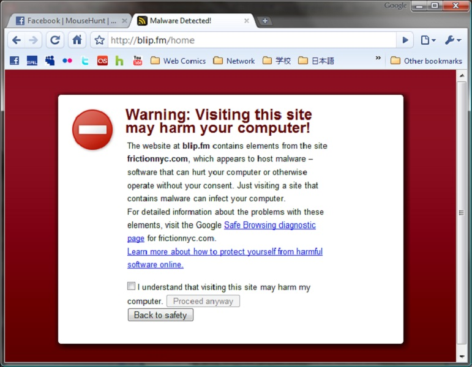

WEB
Most people use the Internet every day. Reading news, checking social media, what the weather will be the coming days. It connects the world. It’s also a very dangerous place if you aren’t careful. Malware injections, and other types of attacks happens on a daily basis. We will go through some different dangers, and what you can do to protect yourself.
ENCRYPTION
We browse the web using two technologies. HTTP and HTTPS. The main difference between the two, is that the latter is encrypted, the S being for “Secure”. In a perfect world, every website would use it, but that is not the case yet. You should however check the address bar when you are on a website where there is sensitive information being transmitted, to make sure you see a green lock. Green is good. There are scenarios where there’s an exclamation mark next to it. If the locker is orange, it is not secure. If it is green with an exclamation mark, your browser are blocking the elements that are not secure. This can be fine on some websites, but if the content is of a highly sensitive nature, it's a good idea to only accept no-exclamation mark green locks.
If you visit a site using HTTPS, your activity on this site is hidden from anyone between you and the web server. You might see https://websiteexample.com/profile/user, but your ISP, and anyone else listening, will only know that you are connected to https://websiteexample.com.
Another side to this, is verification. With HTTPS, the content on the site is authentic, as in not altered by someone between you and the server. This is important for news websites, and websites providing you with download links.

WHAT TO CHECK FOR
- Look after HTTPS before submitting any information to a website.
- Easy rule: green is good.
PLUGINS
As you can read about on the malware page, plugins/browser extensions can be a bit of a minefield. There are many plugins that are very helpful, and increases your privacy. But a thing to note, is that with every plugin you install, and with several other factors, your fingerprint is altered. This is how unique you are. Everyone with the exact same values (plugins, browser version, location, etc.) have the same fingerprint. This is generally not something you need to worry about. Should you be interested in seeing how unique you are, you can do so on Panopticlick by EFF.
VPN
These are popular. For a small sum of money, you can hide your Internet traffic from your ISP. If there’s traffic-collection in the country you are in, the only thing they will know about you, is that you use a VPN. You will appear as being in whatever country your VPN server is in, allowing you region-specific content on several services.
However, there’s a catch. Without a VPN, your trust is placed on your ISP, as they know about all your traffic (HTTPS being an exception as mentioned above). With one, you trust that the VPN service doesn’t keep any logs. Pretty much all of them claim this, but proving it isn’t all that easy. If you want a VPN, it’s a good idea to pick one that’s been around so you can check how they have handled requests from law enforcement in the past. This is not to say that they are for criminals, this is simply one of the best ways to see if they store any logs.
If they had anything to give, beyond basic information that cannot be connected to anyone specific, it’s a bad sign. Another red flag is if they send you the login information on email, at least if you are not asked to change it on first login. They should not be able to tell you your password, as they should not know what it is. This goes for every service. Also, while custom VPN clients are very common, and easy to use, a much better option is to use an open source client like OpenVPN.
STAY SAFE
- Check if the VPN provider is trustworthy.
- If the VPN is really cheap, there might be a reason for this.
- The service provider should not be able to tell you your password.
COOKIES
If you log on to a website, a session is created. This is stored on your computer in something called a cookie. This determines for how long you get to stay logged in if you don’t actively use the website. If someone else gets their hands on your session ID, they can potentially use the website disguised as you. This is why it’s strongly recommended to log out of websites like your bank as soon as you are done, this ends the session. Should you check the “remember me” when you log in, the session will not die until you either log out or delete the cookie.
To use cookies in an example, a hotel website can adjust their prices based on whether or not you have checked other prices. They can also be used to track what items you want to buy, for targeted advertising. Plugins can help you avoid this, should you wish to.
DANGERS
Cross-site scripting (XSS) is when an attacker publishes programcode on a website. This means that what looks innocent, can perform actions without the users knowledge. There are ways to prevent it server-side, but the only way the user can stay safe is by disabling JavaScript, which can cause websites to both display wrong, and remove a lot of functionality.
Cross-site request forgery (CSRF) can be used to make a user perform an action they didn’t intend or want. It’s most common in the form of a link, and can be used for many things, like changing your password on a website. It can do anything you are able to do from your account. There are countermeasures against this as well, but that’s not to say it’s implemented on all websites.
If you visit an infected website, you can get injected with malware. This is called a drive-by download. There doesn't need to be any obvious red flags. It’s also possible that it encrypts your computer entire computer, asking for ransom in order to unlock it again. More about this on the malware page. The point is that the web is arguably one of the most risky places, as no action is required from the user, unlike emails and such. This can be a website you visited without any problems the day before.

Follow us on social media!